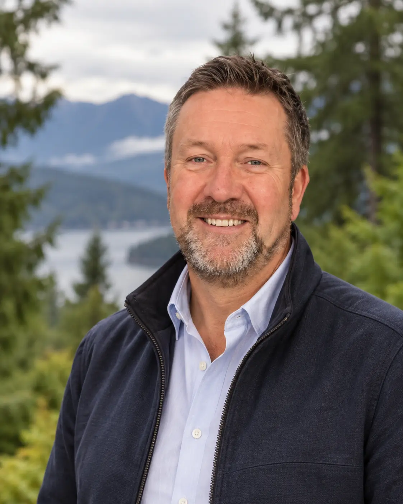

Protecting Anmore's character
Preserve the natural, semi-rural character that makes Anmore special and keep the community's voice at the centre of major decisions.

Rod Rempel for Anmore Council
Anmore deserves thoughtful decisions, responsible growth, and a council that listens before it acts.
October 2026General Voting Day

Rod's priorities
Three clear commitments for the village Rod is proud to call home.
Preserve the natural, semi-rural character that makes Anmore special and keep the community's voice at the centre of major decisions.
Demand realistic plans for roads, water, emergency access, services, and costs before committing residents to growth they may have to fund.
Listen before decisions are made, ask hard questions, communicate clearly, and focus council on workable solutions and accountable results.
“Anmore is more than where I live. It's the community I chose, the people I care about, and the place I want to protect.”
Rod Rempel
Meet Rod
Rod has called Anmore home for ten years. He loves its forests, lakes, village character, and the strong sense of community that connects neighbours here.
He has not watched from the sidelines. As a community advocate, Rod has brought residents' concerns about development, infrastructure costs, traffic, emergency access, and Anmore's future directly before council.
In his professional life, Rod has led complex operations and teams. That experience shapes how he approaches public decisions: understand the details, challenge assumptions, identify who carries the risk, and follow through.
Rod is running because Anmore needs councillors who will listen carefully, work constructively with others, and protect the long-term interests of the whole village.
How Rod will serve
Council decisions should be understandable, evidence-based, and rooted in the realities facing Anmore residents.
Make room for residents' voices before positions harden and decisions are made.
Test the assumptions, costs, infrastructure demands, and long-term consequences.
Explain decisions plainly and make it easy for residents to see what happens next.
Make your voice count
General Voting Day is Saturday, October 17, 2026. Official voting locations and advance voting details will be published by the Village of Anmore.
Be part of the campaign
Volunteer, request a lawn sign, or connect with Rod and the campaign team.
Email the campaign Campaign email will be confirmed before public launch.